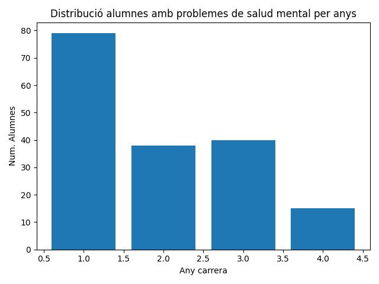

Representació d'estudiants amb problemes de salud mental a les carreres científiques:
Homes a la ciencia: 76, 44 dels quals tenen algun problema de salud mental.
Dones a la ciencia: 71, 41 de les quals tenen algun problema de salud mental.
Això representa un 57.8947% d'homes amb problemes de salud mental a les carreres cientifiques i
un 57.7465% de dones.
5 homes diuen que han buscat ajuda mentres que
les dones, 4 de elles diuen que han buscat ajuda.
Aixo es nomes un 6.12245% de persones que ha demanat ajuda.
Podem veure que les carreres cientifiques representen un 27.907% de totes les materies registrades
Ara mirarem el total de persones que tenen ansietat i veurem quin percentatge sol demanar ajuda.
El 63.4551% de persones sufreixen algun tipus de problema de salud mental, i un 5.98007% de les quals ha demanat algun tipus de ajuda per superar-ho.
Ara mirarem quines persones solen tenir mes ansietat segons l'any cursant
Distribució (H/D):
| Any |
Num. alumnes |
Percentatge (%) |
| 1 |
42 |
50% |
| 2 |
20 |
23.8095% |
| 3 |
9 |
10.7143% |
| 4 |
13 |
15.4762% |

Podem veure com els estudiants de primer any de carreres cientifiques són els que més problemes de salud mental tenen dels 4 cursos representant així el 50% de estudiants amb problemes de ansietat, depressió o atacs de panic dins les seves carreres.
Amb aquet resultat podriem arribar a la conclusio tinguent en compte el seguent:
Hipótesis
A 1er i 2n, molts estudiants no saben si els i agrada la materia, solen haver-hi assignatures troncals que no tenen molt a veure amb la carrera i també, el canvi de batxillerat o cicles al model universitari porta a molts alumnes a posar-se nerviosos.
Al 3er any normalment les assignatures son més pràctiques i més afins amb la carrera escollida, per veterania ja saps com van els examens i mes o menys ja t'has decidit si la carrera t'agrada o és lo teu.
Al 4rt any hi sol haver una pujada deguda al treball de final de grau i a voler acabar ja la carrera.